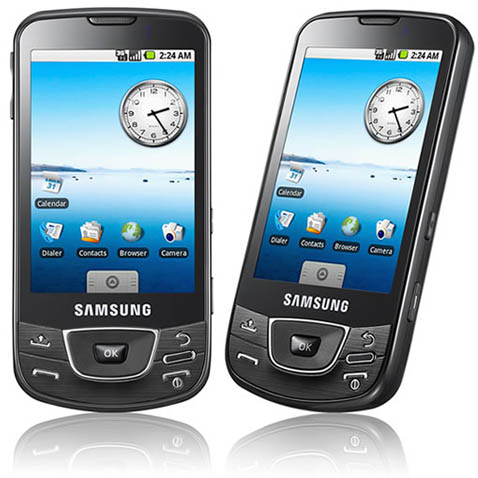
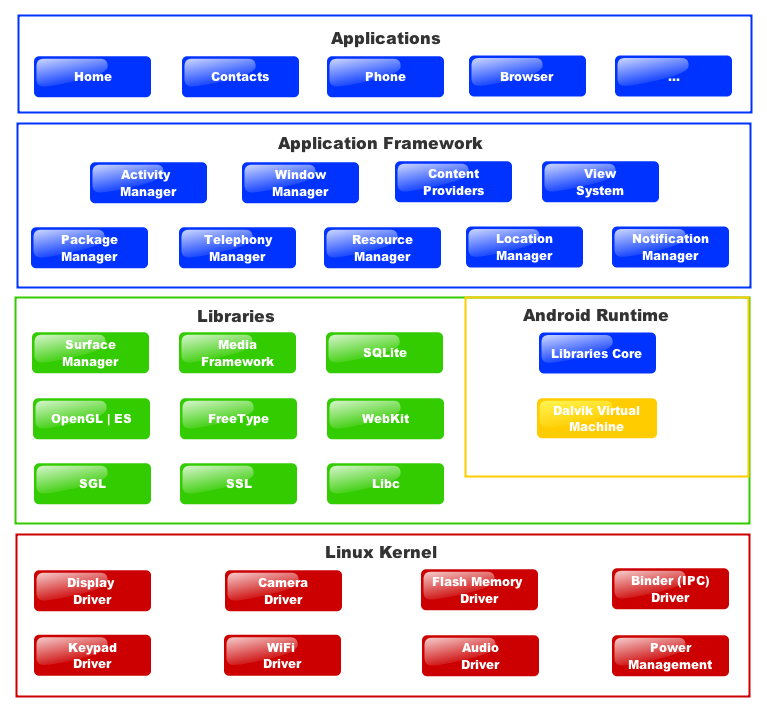
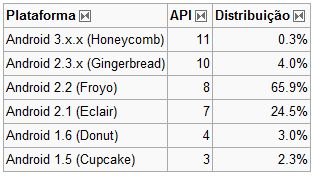
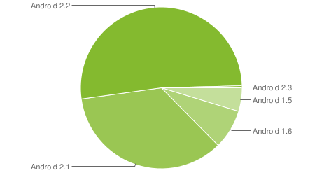

Android(){
Capa

O Android da Google é hoje, sem dúvidas, um dos softwares livre mais populares no ramo de computação ubíqua e móvel.
Um pouco de história.
Em julho de 2005 a Google adquiriu a Android Inc., uma pequena empresa em Palo Alto, California, USA. Começou então a ser desenvolvida uma plataforma para telefone móvel baseada em Linux, com o objetivo de ser uma plataforma flexível, aberta e de fácil migração para os fabricantes. Nascia o Android.
O primeiro telefone comercialmente disponível a rodar no sistema Android foi o HTC Dream, lançado em 22 de outubro de 2008.
O primeiro tablet comercialmente disponível a rodar o sistema operacional Android 3.0 foi o Motorola Xoom, lançado em 24 de fevereiro de 2011 nos Estados Unidos e desde então o Android não para de crescer e surpreender.
Handset layouts:
A plataforma é adaptada tanto para dispositivos VGA maiores, gráficos 2D, bibliotecas gráficas 3D baseadas em OpenGL ES especificação 2.0 e os layouts mais tradicionais de smartphones.
Armazenamento:
É utilizado SQLite para armazenamento de dados.
Conectividade:
O Android suporta uma grande variedade de tecnologias de conectividade incluindo GSM/EDGE, IDEN, CDMA, EV-DO, UMTS, LTE, Bluetooth, 3G, Wi-Fi e WiMAX.
Mensagens:
Tanto SMS como MMS são formas disponíveis de envio de mensagens.
Navegador:
O navegador disponível no sistema é baseado no framework de Código aberto conhecido como WebKit.
Máquina virtual Dalvik:
Aplicações escritas em Java são compiladas em bytecodes Dalvik e executadas usando a Máquina virtual Dalvik, que é uma máquina virtual especializada desenvolvida para uso em dispositivos móveis, o que permite que programas sejam distribuídos em formato binário (bytecode) e possam ser executados em qualquer dispositivo Android, independentemente do processador utilizado. Apesar das aplicações Android serem escritas na linguagem Java, ela não é uma máquina virtual Java, já que não executa bytecode JVM.
Multimídia:
O sistema irá suportar formatos de áudio e vídeo como: MPEG-4, H.264, MP3, e AAC.
Suporte Adicional de Hardware:
O Android é totalmente capaz de fazer uso de câmeras de vídeo, tela sensível ao toque, GPS, acelerômetros, e aceleração de gráficos 3D.
Ambiente de desenvolvimento (SDK):
Inclui um emulador, ferramentas para debugging, memória e análise de performance. O IDE Eclipse (atualmente 3.4 ou 3.5) poderá ser utilizado através do plugin Android Develpment Tools (ADT).
O sistema.
Segue abaixo um vídeo com uma breve demonstração das funcionalidades do sistema operacional Android.
Versões.
As várias versões de Android têm desde a versão 1.5, nomes de sobremesas ou bolos (em inglês) e seguem uma lógica alfabética:
1.5: Cupcake (Abril de 2009, com a última revisão oficial a maio de 2010)
1.6: Donut (Setembro de 2009, com a ultima revisão oficial a maio de 2010)
2.1: Eclair (Janeiro de 2010, com a última revisão oficial a maio de 2010)
2.2: FroYo (Frozen Yogourt - Maio de 2010, com a última revisão oficial a julho de 2010)
2.3: Gingerbread (versão atual lançada a 6 de dezembro de 2010)
3.0: Honeycomb (Lançada especialmente para tablets em Janeiro de 2011)
X.X: Ice Cream Sandwich - Lançamento previsto para o quarto trimeste de 2011, o número da versão ainda não foi oficialmente revelado. (A versão que promete acabar com a fragmentação, ou seja, será para smartphones e tablets de todos os tipos).
Diagrama do Android:

Estatísticas de utilização


É certo que o Android vem conquistando cada vez mais usuários e, ao que tudo indica, tende a ser um grande nome no ramo de sistemas operacionais e software livre.